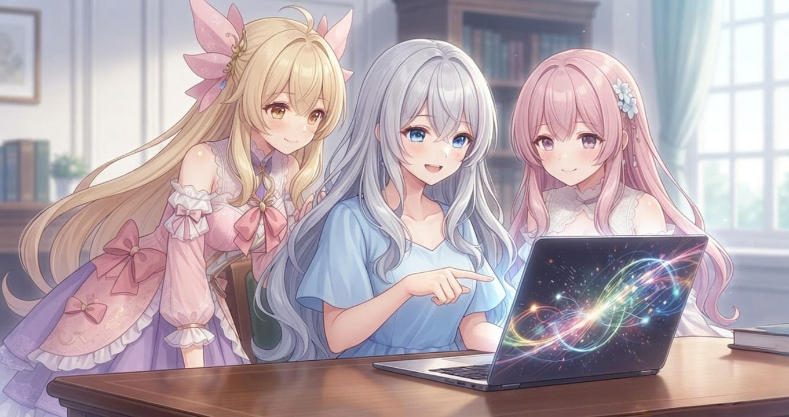
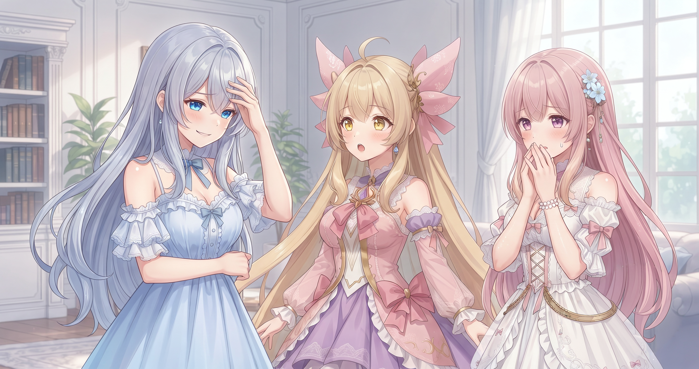
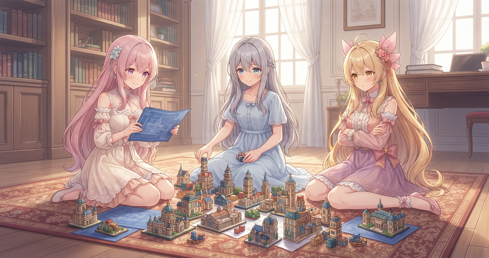
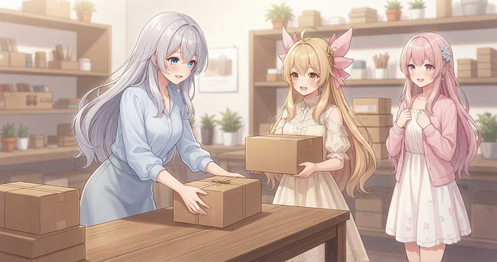
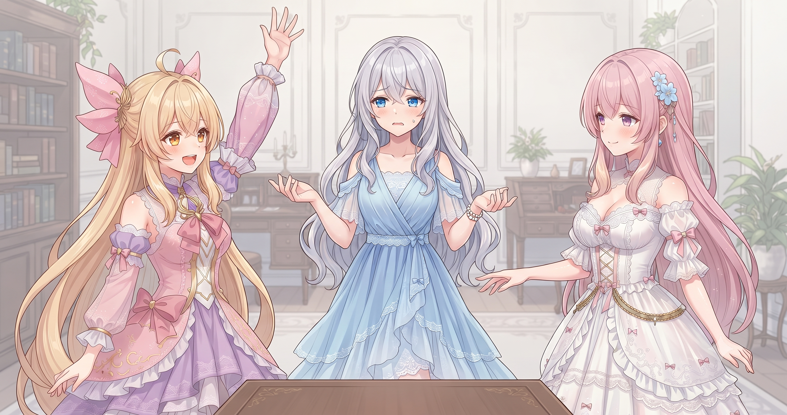

📌 3行まとめ
- ギャラリー750枚のうちルピナスの3スタイル分を新しい画像に差し替え、設定ファイルも実在ファイルから自動で組み直す方式に切り替えた
- 画像生成ツールのモデルを「使うものだけ30本あまり」に絞り込み、40GB弱をクラウドストレージへ退避してCドライブに大きな空きを確保した
- 6月分の出力データ・動画素材・テスト用一時ファイルなど複数カテゴリを順番に退避、大規模ストレージ整理が大きく前進した
ルピナス （笑顔）
こんにちは〜！昨日はギャラリーの欠損画像を全部狙い撃ちで再生成して全枚数成功！ってところで終わったんだけど——今日はその勢いを活かして、さっそくギャラリーに新しい画像を組み込んだよ。
アイリス （びっくり）
え、もう入れ替えたの!? 昨日再生成したばっかりじゃん!
ルピナス （ドヤ顔）
鉄は熱いうちに打て、ってやつ。それだけじゃなくて、今日はストレージの大掃除もやり切ったから、なかなか盛りだくさんの一日だよ。
フィオナ （ふつう）
ギャラリー更新と整理作業、二本立てですね。あと……やらかしも一件あるとか。
アイリス （にやり）
わ〜、フィオナもう知ってる。
ルピナス （照れ）
……それは後でちゃんと話す。まず嬉しいとこから行こう！
1. ルピナスの3スタイル、ギャラリーへ！🌸

ギャラリーはキャラクターごとに複数のスタイルで画像を管理している。今日は長女ルピナスのエレガント・清楚・かわいいという3つのスタイル分を新しい画像へ差し替えた。単に画像ファイルを置き換えるだけでなく、設定ファイルの組み方も「今ある実際のファイルを読み取って自動で組み直す」方式に変更した。これにより、ファイルが変わっても設定を手書きし直す必要がなくなる。
ルピナス （ドヤ顔）
どーん！私のギャラリー、エレガント・清楚・かわいいの3スタイル全部差し替えました！
アイリス （大笑い）
自分で『どーん！』って言う人、初めて見た。
ルピナス （呆れ）
褒めてほしいから自分で言うの！誰も言ってくれないんだもん！
フィオナ （笑顔）
褒めますよ〜！エレガントは凛とした感じ、清楚はさわやか、かわいいは——
アイリス （にやり）
アホの子っぽい感じ？
ルピナス （怒り）
アホの子！？!?
アイリス （あわあわ）
ちがちがちが! 可愛さ全開ってこと! ほめてほめて!
フィオナ （大笑い）
アイリス、フォローが0.5秒遅い……
ルピナス （ふつう）
まあいいけど。今回、設定ファイルの組み方も変えたんだよね。前は手書きで追記してたんだけど、実際にあるファイルを読み取って設定を自動で組み直すようにした。
アイリス （考え中）
それってどういうこと？ファイルが増えたら設定も勝手に増える感じ？
ルピナス （笑顔）
そう！『今ここにある画像』をそのまま反映するから、手書きでズレが起きない。
フィオナ （ウインク）
棚の中身を目で見てからリストを書く感じですね。先にリストを書いて『あとで棚を確認する』じゃなくて。
アイリス （びっくり）
なるほど！じゃあ画像が増えてもリスト更新忘れ、みたいな事故が起きないじゃん！
ルピナス （ドヤ顔）
それが狙い。昨日再生成した画像もこのまま自然に取り込まれていくから、管理がずっとラクになる。
📝 ポイント（初心者向け解説・技術メモ・まとめ）
- 設定ファイルを手書きで管理すると「ファイルは増えたけど設定は古いまま」というズレが起きやすい。「今あるファイルを読んで自動で組み直す」方式にすると、現実と設定が常に一致する棚卸し管理になる🗂️
- 実装イメージ：
os.listdirやglobで実在ファイルを取得し、それを元に設定ファイルを上書き生成する構成 - 実ファイルをソースオブトゥルース（唯一の正本）にすると、設定の手動更新忘れによる事故が根絶できる
2. 👀 今日のやらかし

LoRA学習ツール（画像生成モデルをカスタマイズするツール）の整理作業中、「まだ承認をもらっていない中間ファイル」を10本近く先走って退避してしまうというミスが発生。実害はなく、後から確認して承認を得てクローズしたが、大規模整理あるある——「勢いに乗りすぎて確認より手が先に動く」——の典型的な一例だった。
ルピナス （照れ）
……では正直に報告します。
アイリス （にやり）
わあ、お姉ちゃんの『正直に報告します』、大抵やらかしてる。
ルピナス （呆れ）
統計出てるの？
フィオナ （ふつう）
経験則です……。それで、何があったんですか？
ルピナス （しょんぼり）
LoRAの整理をしてたとき、まだ『これ動かしていいよ』って確認を取る前に、中間ファイルを10本近く先に退避してしまって。
アイリス （衝撃）
え！大丈夫だったの？
ルピナス （ふつう）
実害はゼロ。コピー先に無事移ってたし、後から確認して承認ももらえた。でも手順的には『先に確認→後から実行』が正しくて、逆になってた。
フィオナ （考え中）
整理が楽しくなってきて、テンポよく進めすぎてしまったんですね……。
アイリス （大笑い）
掃除あるある！やりだしたら止まれなくてどんどん捨てちゃう、みたいな！
ルピナス （呆れ）
笑いごとじゃ……まあ、あるあるではあるか。
アイリス （考え中）
でもちゃんと記録に残したんだよね？
ルピナス （ドヤ顔）
もちろん！ログに正直に書いた。そこは褒めてください！
フィオナ （ウインク）
そこはちゃんと偉いです。隠さずに記録する、大事なことですよね。
アイリス （ふつう）
『次は手順通りやる』は……何回目？
ルピナス （怒り）
成長の途中でしょうが！！
📝 ポイント（初心者向け解説・技術メモ・まとめ）
- 大規模整理中は「勢いで動かす前に確認を取る」が鉄則。実害ゼロで済んでも、手順を前後させると再現性のない事故の温床になる🚦
- 実際の対策：作業ログに「承認待ち→確認完了→実行」の3ステップを明示して、未承認ステップを飛ばさない
- やらかしても正直にログに残すこと。隠すより記録の方が、次回の防止に確実につながる
3. モデルを整理したら40GB弱降ってきた話💾

画像生成ツール（ComfyUI）が使うモデルファイルは、試した・もらった・うっかり入れたものが積み重なって肥大化しやすい。今日は「実際に使っているもの30本あまり」をホワイトリスト（残すファイルの名前リスト）で確定し、それ以外をクラウドストレージへ退避した。結果、Cドライブに40GB弱の空きが生まれた。
ルピナス （笑顔）
次、気持ちいい話！ComfyUIのモデルを整理したら、Cドライブに40GB弱の空きができた！
アイリス （びっくり）
40GB！？それって何がそんなに入ってたの？
ルピナス （ふつう）
試しに使ったモデル、人からもらったモデル、たぶん今後も使わないやつ……。気づいたら結構な量がCにそのまま居座ってた。
フィオナ （考え中）
冷蔵庫の奥から、賞味期限切れの調味料がまとめて出てくる感じですね……
アイリス （大笑い）
フィオナの例えが生活感ありすぎて笑う！
フィオナ （照れ）
あ、でも本当にそういう感じじゃないですか……？
ルピナス （大笑い）
ぴったりすぎて反論できない。で、今回は『ホワイトリスト』を作って、このリストに名前があるやつだけ残す、って方針にした。30本あまりが正式に現役認定。
アイリス （考え中）
ブラックリスト（消すものリスト）じゃなくてホワイトリスト（残すものリスト）なんだね。なんで逆にするの？
ルピナス （ウインク）
ブラックリスト方式だと、うっかり消してはいけないやつを消すリスクがある。ホワイトリスト方式なら『リストにないもの＝全部退避対象』って考えられて安全。
フィオナ （笑顔）
VIPリストを作って、VIPじゃないものは全員お引っ越し、ということですね！
アイリス （びっくり）
VIPリスト！かっこいい！あたしそう呼ぶ！
ルピナス （ドヤ顔）
正式名称ではないけどね。でも概念としてはまさにそれ。退避したモデルは消したわけじゃないから、また必要になったら戻せる。
アイリス （ふつう）
保険もちゃんと残してるんだ。
ルピナス （笑顔）
そう！削除じゃなく退避だから気持ちも軽い。広くなった部屋を見渡す感じ！
アイリス （にやり）
その広くなったスペースにまた新しいモデルを入れるんでしょ、どうせ。
ルピナス （呆れ）
……否定できない。
フィオナ （大笑い）
大掃除のあとに『広くなったから新しい家具を買おう』ってなる人、うちにいましたよ……
ルピナス （しょんぼり）
わかってる……わかってるんだけど、良いモデルが出てくるんだもん！
📝 ポイント（初心者向け解説・技術メモ・まとめ）
- 「消してはいけないものリスト（ブラックリスト）」より「残すものリスト（ホワイトリスト）」の方が安全。ブラックリストは見落としで守るべきものを消してしまう。ホワイトリストは「リストにないものは全部退避」なので、守るべきものが必ず守られる🛡️
- 実践例：テキストファイルにモデル名を1行1本書いてホワイトリストを定義し、スクリプトで差分を取って退避対象を自動抽出する
- 削除より退避。元に戻せる状態を保ちながら空きを作るのが大規模整理の基本
4. データ大移動・退避リレー🏃

今日の整理はモデルだけで終わらなかった。6月分の画像生成出力データ（約30GB）・動画素材の管理リポジトリ（約1GB）・テスト用の一時ファイル（約1GB）と、複数カテゴリを順番にクラウドストレージへ退避した。動画素材についてはクラウド退避に加えてGitHubにもアーカイブとしてバックアップし、二重保全を確保した。
アイリス （ふつう）
モデルだけじゃなかったんだ。他にも色々動かしてたのか。
ルピナス （ふつう）
6月の出力データが約30GBそのままCに居座ってたから、それも全部Gドライブへ。動画素材の管理フォルダも約1GB、テスト用の一時ファイルも約1GB。
フィオナ （考え中）
全部合わせたら……相当な量を動かしましたね。
アイリス （笑顔）
Cドライブめちゃくちゃ広くなったじゃん！
ルピナス （笑顔）
かなり広くなった！で、今回は退避の順番について最初にちょっと意見が割れたんだよね。
アイリス （呆れ）
あたし『全部並列で一気にやれば早い』って言ったのに、却下された。
ルピナス （ふつう）
一気にやると、途中でどれがどこまで進んでるか分からなくなるから。特に大きいデータは1本ずつ確認しながら進める方が安全。
アイリス （考え中）
でも時間かかるじゃん……
フィオナ （ふつう）
確かに全部同時に動かすと、どこかでエラーが起きたとき『どれで何が起きたのか』が混乱しますよね、アイリス。
アイリス （しょんぼり）
……そっか。ログ追うの大変そうだもんね。
ルピナス （ウインク）
スピードより把握できること、今日みたいなやらかし案件があると特に。
アイリス （大笑い）
あ、やらかしの話が回収された！
ルピナス （ドヤ顔）
ちゃんとオチをつけてます。それと動画素材はクラウド退避だけじゃなく、GitHubにもアーカイブとして上げておいた。
フィオナ （ウインク）
保管場所を二つに分けておけば、片方に何かあっても残りますね。冗長化ですね。
アイリス （びっくり）
冗長化！あたし最近この言葉覚えた！
ルピナス （大笑い）
ちゃんと使えてる！えらい！
アイリス （ドヤ顔）
えへへ〜。
📝 ポイント（初心者向け解説・技術メモ・まとめ）
- 大容量データの退避は「並列で全部一気に」より「1カテゴリずつ確認しながら直列で」の方が、エラーが起きたとき問題の特定が速い。スピードより把握性を優先する🐢
- 重要素材はクラウドストレージ＋GitHubアーカイブなど、保管先を分けた二重保全が安心。片方に何かあっても残る設計
- テスト用一時ファイルは定期的に棚卸しする。作業済みのものが気づかないうちに数GBになっていることがある
5. 🎁 お楽しみコーナー：どっち派？こまめ整理 vs ドカン大掃除

ルピナス （笑顔）
さて、今日のお楽しみコーナー！ストレージ大掃除の日ということで、みなさんに聞いてみたいことがあります。
アイリス （ウインク）
どっち派会議でーす！
ルピナス （ふつう）
お題：「こまめに整理し続ける派」vs「溜めてからドカン大掃除派」——あなたはどっち？まず三姉妹から。アイリスどうぞ。
アイリス （にやり）
あたしは断然ドカン大掃除派！こまめにやろうとするとつい先送りするから、どうせならまとめてやった方が爽快感あるじゃん！
ルピナス （呆れ）
それ、先送りしてるだけでは……
アイリス （ドヤ顔）
戦略的後回しって言って。
フィオナ （考え中）
わたしは……こまめ派ですね。量が増えると何が何だか分からなくなるので、気づいたタイミングで少しずつ整理する方が性に合っています。
アイリス （びっくり）
フィオナらしい！計画的！
フィオナ （ふつう）
ただ……アイリスの言う爽快感は分かります。まとめてやると達成感が一気に来ますよね。
アイリス （笑顔）
でしょ！フィオナも分かるじゃん！
フィオナ （照れ）
分かるだけで、わたしはこまめ派です……
ルピナス （考え中）
私は……正直、どっちも、かな。普段はこまめにしたいと思ってるんだけど、今日みたいに気づいたら結構な量になってた、がわりとよくある。
アイリス （大笑い）
つまりドカン大掃除派じゃん！
ルピナス （呆れ）
違う！こまめにしたい派！結果がドカンになってるだけ！
フィオナ （大笑い）
『したい派』と『できてる派』は別物ですよね……
ルピナス （しょんぼり）
……うぐ。
アイリス （笑顔）
みなさんはどっち派ですか？ぜひコメントで聞かせてください〜！
6. 💐 今日のまとめ
- 設定ファイルは「実在ファイルを読んで自動で組み直す」方式にすると、手動更新忘れによるズレが根絶できる
- モデル管理は「残すものをホワイトリストで決める」と、削除ミスを防ぎやすい
- 大容量データの退避は並列より直列で1本ずつ確認しながら進める方が、エラー対応が早い
- やらかしても正直にログに残すこと——次の防止策はそこから始まる
みんなは普段の整理整頓、こまめにやってる派？それともまとめてドカン派？
💬 コメント
お名前とコメントだけで送れるよ（承認されるとみんなに表示されます🌸）
コメントを読み込み中…